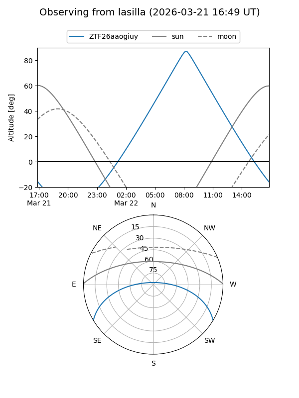
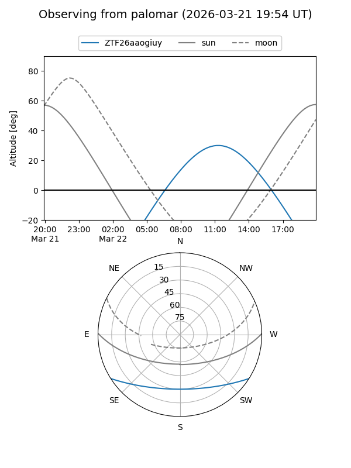

ZTF26aaogiuy
Target ZTF26aaogiuy at 2026-03-21 14:02
Aliases and brokers:
FINK: link
Lasair: link
ALeRCE: link
alt names
ZTF26aaogiuy (ztf,fink_ztf)
Coordinates:
equatorial (ra, dec) = 232.1218,-26.52854
equatorial (HMS+DMS) = 15:28:29.23,-26:31:42.75
galactic (l, b) = (341.3722,+24.38494)
Flags:
Photometry:
last ztfg=16.49
1 ztfg detections
Lightcurve
Visibility


Additional plots